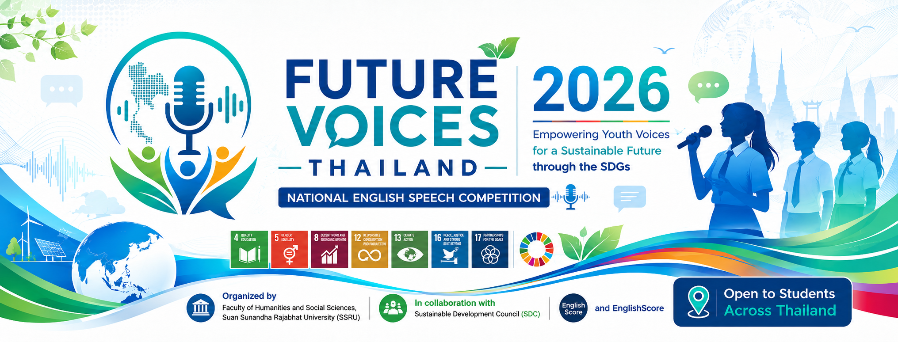
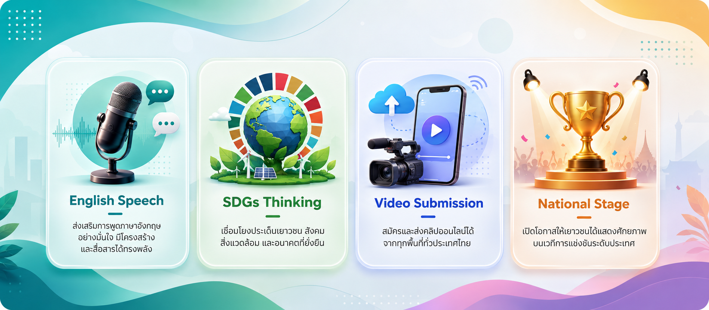

8:00 a.m.
Registration and finalist briefing begin.
Empowering Youth Voices for a Sustainable Future through the SDGs. A national stage for students across Thailand to share ideas, leadership, and English communication skills.

View the official competition agenda, arrival information, venue details and the three-member judging panel.
Registration and finalist briefing begin.
Impromptu Speech Competition begins with the Primary Divisions.
Meet the distinguished Grand Finale judging panel.
Faculty of Science and Technology, Building 26, SSRU.
Future Voices Thailand 2026 invites students to speak in English on sustainability, leadership, education, community action, and global citizenship.

Build confidence, structure, and impact through public speaking in English.
Connect youth ideas with social, environmental, and sustainable development issues.
Submit a 90–120 second speech video through the online application form.
Top finalists compete live at Suan Sunandha Rajabhat University.
Meet the 22 finalists advancing to the national stage on 18 August 2026.